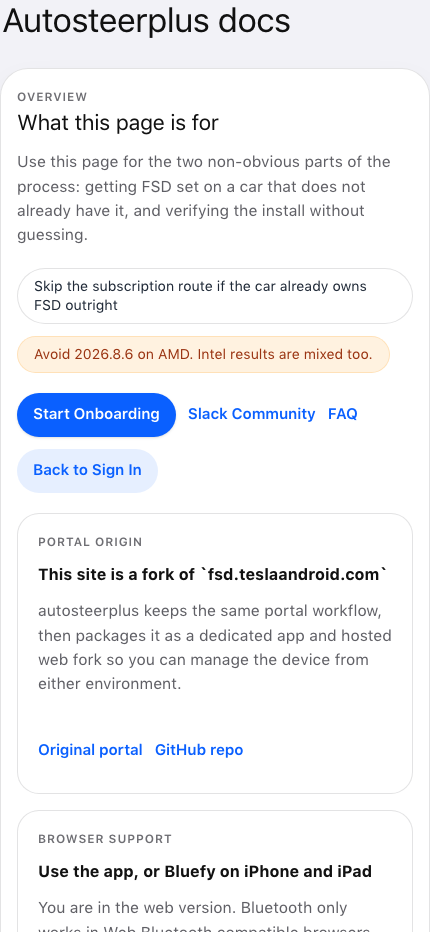
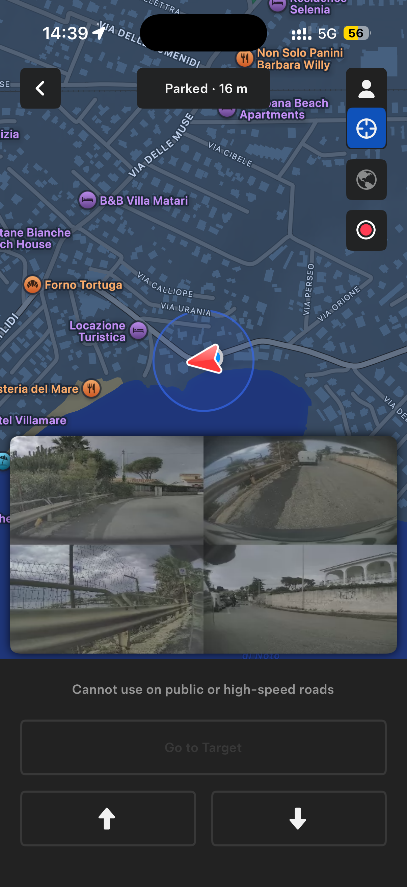

Expected FSD visualization
Compare the driving view against the in-app reference so you know what a successful result looks like.

autosteerplus
Built-in docs and visual checks
Check the Summon radius, FSD visualization, speed profile guidance, and recovery steps inside the app.

Compare the driving view against the in-app reference so you know what a successful result looks like.
Use the larger blue circle as the quick pass or fail signal after installation.
